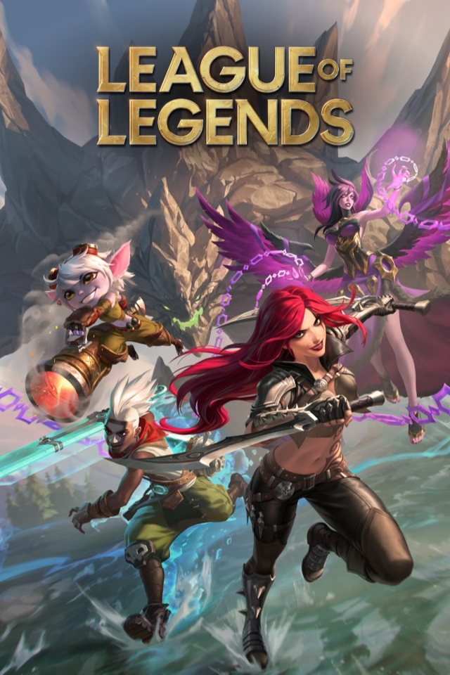
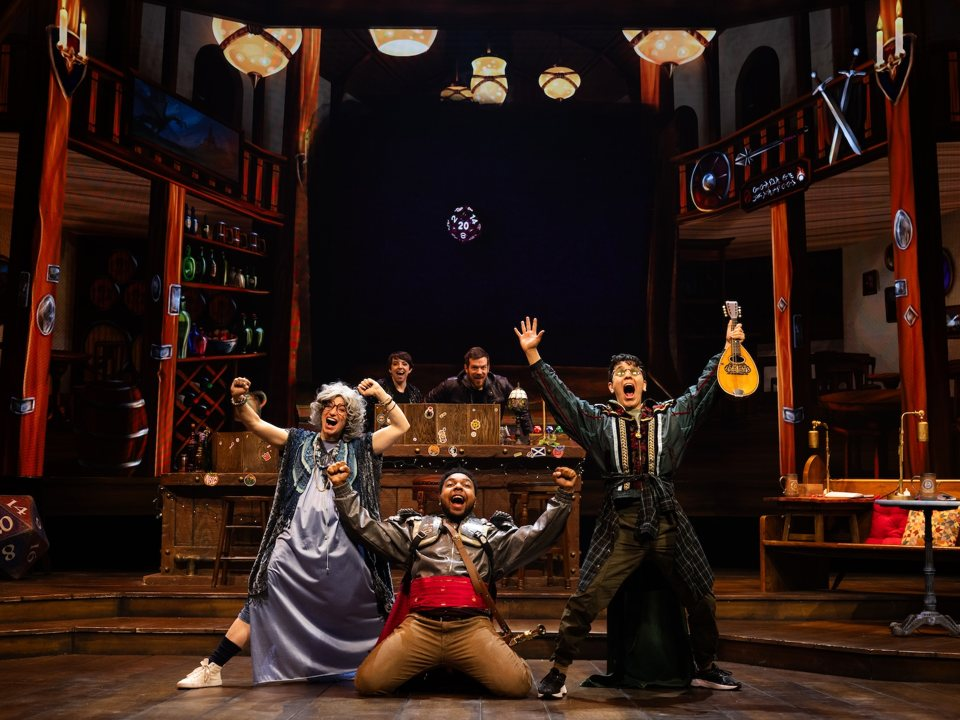

Fire Emblem Fortune’s Wave
One of the games I enjoy spending time with to unwind and explore another world.
One of the games I enjoy spending time with to unwind and explore another world.

I enjoy exploring, meeting the characters and making decisions that shape my own adventure.

A way to play with friends, work as a team and try to make sure the other team’s nexus is the one that falls.

I like imagining places, characters and stories that come to life around the table. Each adventure is a chance to discover a different world.

Game sessions are a reason to get together, laugh and build a story together. Plans that go wrong often become fond memories too.

Playing a character is a chance to improvise and step into someone else’s shoes. Between conversations and unexpected decisions, there is always room for a little theatre.

Judo combines physical activity, technique and concentration. It gives me time to move, learn and do something away from screens.

Sharing what I have learned and helping others improve is another way to enjoy judo. Explaining a technique also helps me understand it better.